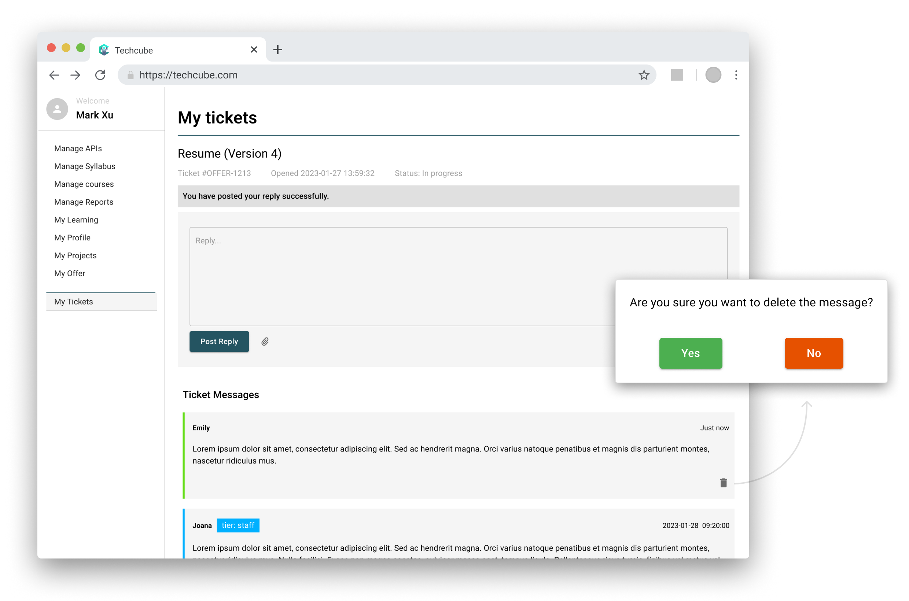

<div id="portfolio-page" class="portfolio-page-content">
    <div class="portfolio-page-wrapper">
        <div class="portfolio-page-nav">
            <div class="nav-item portfolio-page-prev-next">
                <a class="ajax-page-load" href="portfolio-project-1.html"><i class="lnr lnr-chevron-left"></i></a>
                <a class="ajax-page-load" href="portfolio-project-3.html"><i class="lnr lnr-chevron-right"></i></a>
            </div>
            <div class="nav-item portfolio-page-close-button">
                <a id="portfolio-page-close-button" href="#"><i class="lnr lnr-cross"></i></a>
            </div>
        </div>

        <div class="portfolio-page-title">
            <div>
                <h1>OLCMS<span class="text-highlight">-</span>Ticket System Integration</h1>
                <h5>Interactive Ticket System for Empowered Learning</h5>
            </div>
        </div>

        <div class="project1_overview">
            <div class="intro">
                <div class="left">
                    <div class="heading">
                        <h2>Project Description</h2>
                    </div>
                    <div class="description">
                        <p>The Online Learning Content Management System (OLCMS) Ticket System is a user-friendly platform designed to facilitate seamless communication and personalized assistance between students and teachers during the job hunting process.
                            <br>
                            As a natural extension of our existing online learning management system, the ticket system aims to bridge the gap between students seeking career guidance and expert teachers who can provide valuable insights and support.
                        </p>
                    </div>
                    <div class="list">
                        <ul>
                            <li>Personalized Support</li>
                            <li>Streamlined Communication</li>
                            <li>Continuous Internal Improvement</li>
                        </ul>
                    </div>
                </div>


                <div class="right">
                    
                </div>

            </div>

            <div class="user_need">
                <h2>Understanding the Needs</h2>
                <div class="user_need_img">
                    
                </div>
            </div>

            <div class="framework">
                <div class="framework_content">
                    <h2>Framework</h2>
                    <p>Our design journey commenced by extending the aesthetics of our existing Learning Management System to create an interaction framework. By maintaining our established color scheme, layout, and visual identity, we ensured continuity and a sense of familiarity for our users. </p>
                </div>
                <div class="framework_img">
                    
                </div>
            </div>

            <div class="task_flow">
                <div class="task_flow_content">
                    <h2>Task Flow</h2>
                    <p>The task flow maps out the student’'s journey within the ticketing system, illustrating the steps they need to take to achieve their objectives, such as creating a new ticket, post reply in an existing ticket, etc. This step helped me define the crucial touchpoints within the ticketing process.</p>
                </div>
                <div class="task_flow_img">
                    
                </div>
            </div>

            <div class="user_flow">
                <div class="user_flow_content">
                    <h2>User Flow</h2>
                    <p>The core of our approach was to create an intuitive user experience. We intricately mapped out the user journey, allowing students to initiate new tickets and receive personalized assistance from teachers. This user flow mapping guarantees logical navigation and a smooth transition between various steps, which helps set me up in creating mockups.
                    </p>
                </div>
                <div class="user_flow_img">
                    
                </div>
            </div>

            <div class="page_display">
                <h2>Page Display</h2>
                <div class="philosophy">
                    <h3>"Our design philosophy centers on contextual interaction,
                        <br>
                        empowering users with the information they need through streamlined engagement."</h3>
                </div>
                <div class="display_content">
                    <div class="feature_1">
                        <div class="img_display">
                            <video autoplay muted loop>
                                <source src="img/portfolio/ticket/notification_display.mp4" type="video/mp4">
                            </video>
                        </div>
                        <div class="text_content">
                            <div class="row">
                                <h3>Real-time Notification Bar</h3>
                            </div>
                            <div class="row">
                                <h4>Timely Engagement and communication</h4>
                                <p>A dynamic notification bar is integrated at the top-right corner of the interface. This feature serves as a crucial bridge for seamless communication between students and teachers, ensuring that users are always informed and engaged with the latest developments in their interactions.</p>
                            </div>
                        </div>
                    </div>
                    <div class="feature_2">
                        <div class="text_content">
                            <div class="row">
                                <h3>Seamless File Sharing & Immediate Course Correction</h3>
                            </div>
                            <div class="row">
                                <h4>Efficiency and Confidence</h4>
                                <p>When composing a reply on the ticket page, you'll find a user-friendly "Attach File" icon at your disposal. This allows you to effortlessly include relevant files, such as documents, images, or presentations, directly within your response. There's no need to navigate between multiple platforms or emails to share documents.
                                    <br><br>
                                    We understand that sometimes decisions can change, even in a matter of seconds. That's why we've also integrated a "Delete" button right next to the new post. If you decide the reply sent is no longer necessary, a quick click on the "Delete" button ensures that the message is removed, meanwhile a double check window will pop up to avoid accidental touches.
                                </p>
                            </div>
                        </div>
                        <div class="img_display">
                            
                        </div>
                    </div>
                    <div class="feature_3">
                        <div class="img_display">
                            <video autoplay muted loop>
                                <source src="img/portfolio/ticket/history_message.mp4" type="video/mp4">
                            </video>
                        </div>
                        <div class="text_content">
                            <div class="row">
                                <h3>Comprehensive Message History</h3>
                            </div>
                            <div class="row">
                                <h4>Streamlined Viewing and Clear Context</h4>
                                <p>The ability to access all history messages within each ticket is important. This history is organized in reverse chronological order, ensuring that user can navigate through conversations from the latest interactions to the earliest ones. Also, messages are clearly labeled, enabling easy identification of whether it's a student's inquiry or a specific teacher's guidance.</p>
                            </div>
                        </div>
                    </div>
                    <div class="feature_4">
                        <div class="text_content">
                            <div class="row">
                                <h3>Guided Ticket Creation</h3>
                            </div>
                            <div class="row">
                                <h4>Tailored Assistance Selection for Streamlined Interactions</h4>
                                <p>Before users embark on the process of raising a new ticket, they encounter the "What Do You Need Help With?" section. This feature offers a curated selection of potential assistance categories. For those seeking a more tailored experience, the ability to expand the ticket creation section remains readily available.
                                    <br>br
                                    By introducing the "What Do You Need Help With?" section, we're crafting an interface that is both tidy and visually pleasing, make the ticket creation process more efficiency, meanwhile give the teachers a lightened workload.
                                </p>
                            </div>
                        </div>
                        <div class="img_display">
                            <video autoplay muted loop>
                                <source src="img/portfolio/ticket/ticket_creation.mp4" type="video/mp4">
                            </video>
                        </div>
                    </div>
                    <div class="feature_5">
                        <div class="img_display">
                            <video autoplay muted loop>
                                <source src="img/portfolio/ticket/hover_over.mp4" type="video/mp4">
                            </video>
                        </div>
                        <div class="text_content">
                            <div class="row">
                                <h3>Smart Hover Details</h3>
                            </div>
                            <div class="row">
                                <h4>Clean and Contextual Ticket List Display</h4>
                                <p>Only when user hover over a ticket row, pertinent details such as attached files and the current status appear, giving a contextual snapshot of that specific ticket. This will ensure providing information precisely when you need it, without overwhelming the screen.</p>
                            </div>
                        </div>
                    </div>
                    <div class="feature_6">
                        <div class="text_content">
                            <div class="row">
                                <h3>Instant Confirmation Alerts</h3>
                            </div>
                            <div class="row">
                                <h4>Enhancing User Engagement and Interaction</h4>
                                <p>Whether you're posting replies or managing tickets, the instant confirmation reinforces your engagement and instills a sense of confidence that your input has been received as intended.</p>
                            </div>
                        </div>
                        <div class="img_display">
                            
                        </div>
                    </div>
                </div>
            </div>
            <div class="collection_display">
                <h2>Collection Display</h2>
                <h4><a href="https://www.figma.com/proto/8E6dJppXca4X8oqNAacUY4/techcube?type=design&node-id=44-93649&t=ieKFJgOfksbHYeyR-1&scaling=scale-down&page-id=2%3A148093&starting-point-node-id=44%3A93649&mode=design">Click here</a> and step into the ticket system prototype to experience the whole journey.</h4>
                
            </div>
        </div>


        <!--            <div class="col-sm-4 col-md-4 portfolio-block">-->
        <!--                &lt;!&ndash; Project Description &ndash;&gt;-->
        <!--                <div class="project-description">-->
        <!--                    <div class="block-title">-->
        <!--                        <h3>Description</h3>-->
        <!--                    </div>-->
        <!--                    <ul class="project-general-info">-->
        <!--                        <li><p><i class="lnr lnr-user"></i> Alex Smith</p></li>-->
        <!--                        <li><p><i class="lnr lnr-link"></i> <a href="#" target="_blank">www.project-site.com</a></p></li>-->
        <!--                        <li><p><i class="lnr lnr-calendar-full"></i> 25 april, 2021</p></li>-->
        <!--                    </ul>-->

        <!--                    <p class="text-justify">Aliquam euismod aliquam massa, quis eleifend dui sodales vitae. Interdum et malesuada fames ac ante ipsum primis in faucibus.</p>-->
        <!--                    &lt;!&ndash; /Project Description &ndash;&gt;-->

        <!--                    &lt;!&ndash; Technology &ndash;&gt;-->
        <!--                    <div class="tags-block">-->
        <!--                        <div class="block-title">-->
        <!--                            <h3>Technology</h3>-->
        <!--                        </div>-->
        <!--                        <ul class="tags">-->
        <!--                            <li><a>HTML5</a></li>-->
        <!--                            <li><a>CSS3</a></li>-->
        <!--                            <li><a>jQuery</a></li>-->
        <!--                            <li><a>Ajax</a></li>-->
        <!--                            <li><a>PHP5</a></li>-->
        <!--                        </ul>-->
        <!--                    </div>-->
        <!--                    &lt;!&ndash; /Technology &ndash;&gt;-->

        <!--                    &lt;!&ndash; Share Buttons &ndash;&gt;-->
        <!--                    <div class="share-buttons">-->
        <!--                        <div class="block-title">-->
        <!--                            <h3>Share</h3>-->
        <!--                        </div>-->
        <!--                        <div class="share-buttons-block">-->
        <!--                            <a href="#" target="_blank" class="btn"><i class="fab fa-facebook-f"></i> </a>-->
        <!--                            <a href="#" target="_blank" class="btn"><i class="fab fa-twitter"></i> </a>-->
        <!--                            <a href="#" target="_blank" class="btn"><i class="fab fa-dribbble"></i> </a>-->
        <!--                        </div>-->
        <!--                    </div>-->
        <!--                    &lt;!&ndash; /Share Buttons &ndash;&gt;-->
        <!--                </div>-->
        <!--                &lt;!&ndash; Project Description &ndash;&gt;-->
        <!--            </div>-->

        <div class="project-page-footer">
            <p>© 2023 Yumao Chen</p>
        </div>
    </div>
</div>